2 Acquiring Landsat 8 Data
2.1 Overview
Landsat 8 is an American Earth observation satellite launched on 11 February 2013. The data can be downloaded free of charge by using EarthExplorer portal of USGS. In this chapter, you will learn how to use interfaces provided by EarthExplorer to :
- search for area of interest,
- define area of interest,
- define specific data extraction criteria, and
- download select data.
2.2 Register and create a user account with EROS, USGS
- First, let us visit EarthExplorer website by click on this url.
EarthExplorer website appears on your default web browser as shown be below.
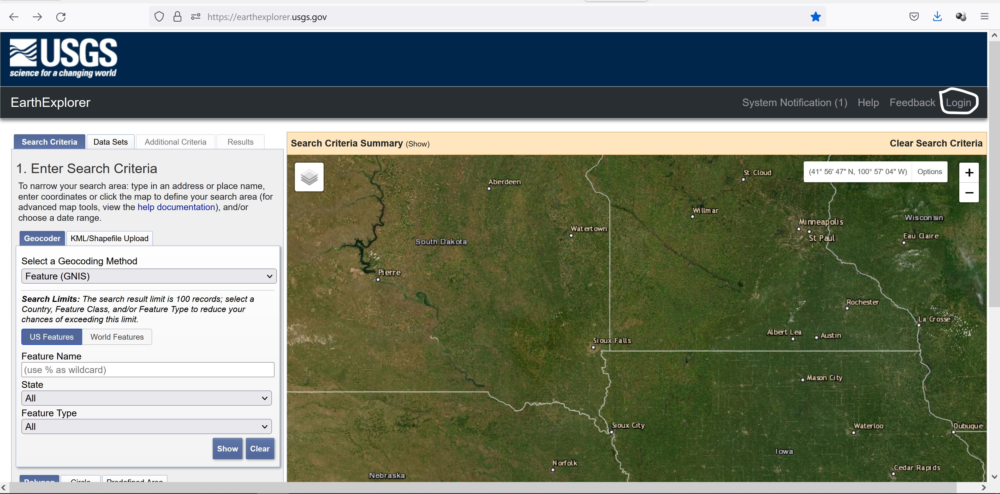
Next, you need to create an account with EarthExplorer, USGS.
- At the top-right corner, click the Login button.
A new window open on your web browser.
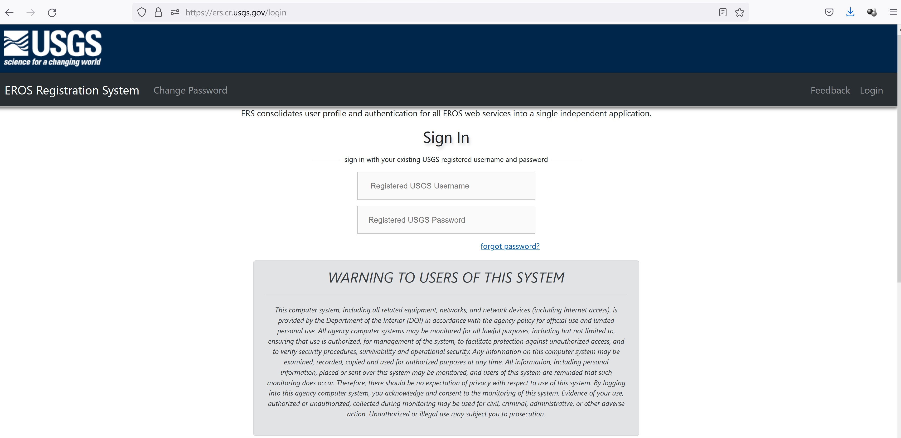
- Scroll down the page until you see the Create New Account button.
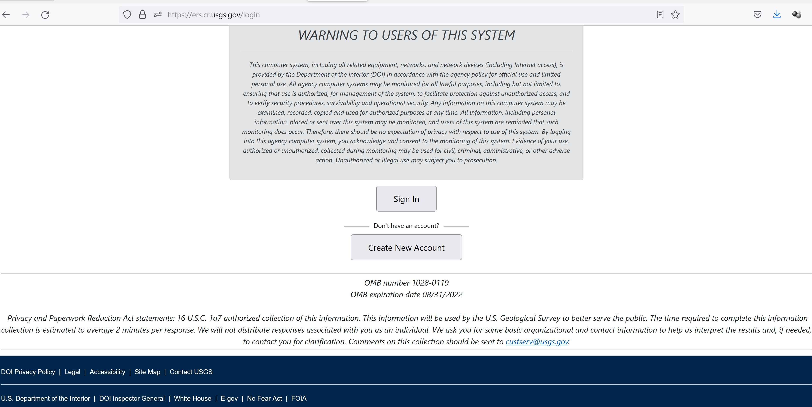
- Click on Create New Account button.
EROS registration page appears on your browser.
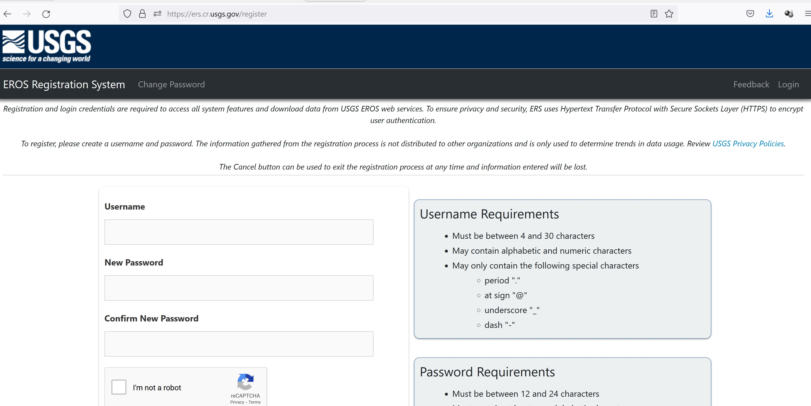
- Complete the form to register.
Once you have registered with USGS successfully, use the newly created username and password to login EarthExplorer.
Your screen should look similar to the screenshot below.
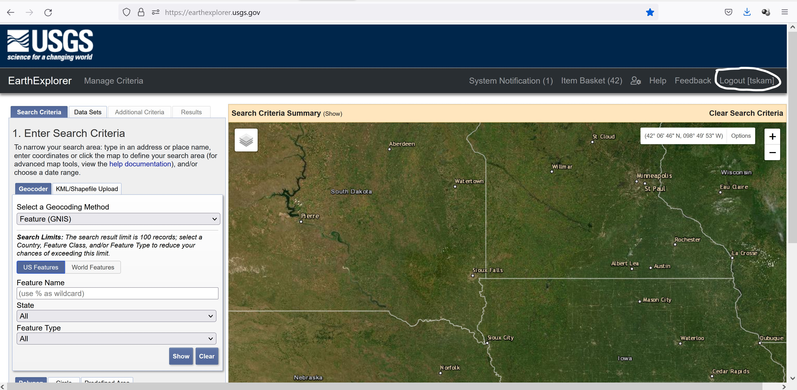
Notice the now the upper right corner will include your username.
The USGS Earth Explorer interface uses Google Maps. You can zoom in and out with the mouse wheel as if you are in Google Maps. Google street view is also enabled, where you can drop a marker and get a real view of the location.
Before getting started, it is always a good practice to click on Clear Search Criteria in order to clear away all the previous search criteria.
In order to download Landsat 8 data from USGS Earth Explorer, here are the four steps you’ll need to follow:
2.2.1 Step 1. Set your area of interest in the “Search Criteria” tab
The easiest way to define the area of interest is by zooming into your area of interest.
- Navigate and zoom into Singapore.
Your screen should look similar to the screenshot below.
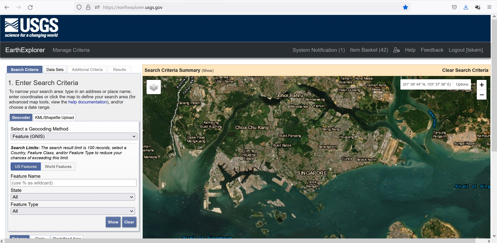
Once you have confirmed the area of interest,
- Scroll downward until you see Use Map button appears on the left panel.
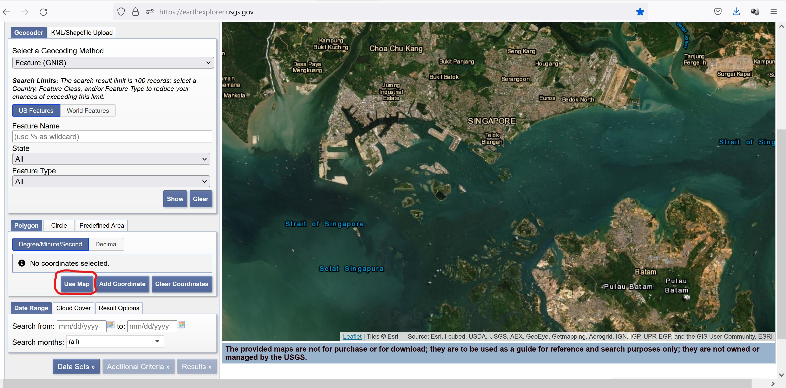
- Click on Use Map button.
Notice that the selected area of interest appears red and the four corner coordinates are displayed on the left panel.
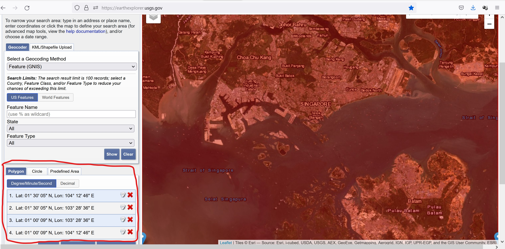
2.2.2 Step 2. Select your data to download in the “Data Sets” tab
Next, we are going to select the data set.
- Scroll down until the end of the page, click on Data Sets button.
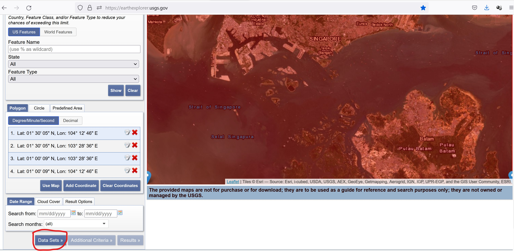
The available data sets list appears on the left panel as shown below.
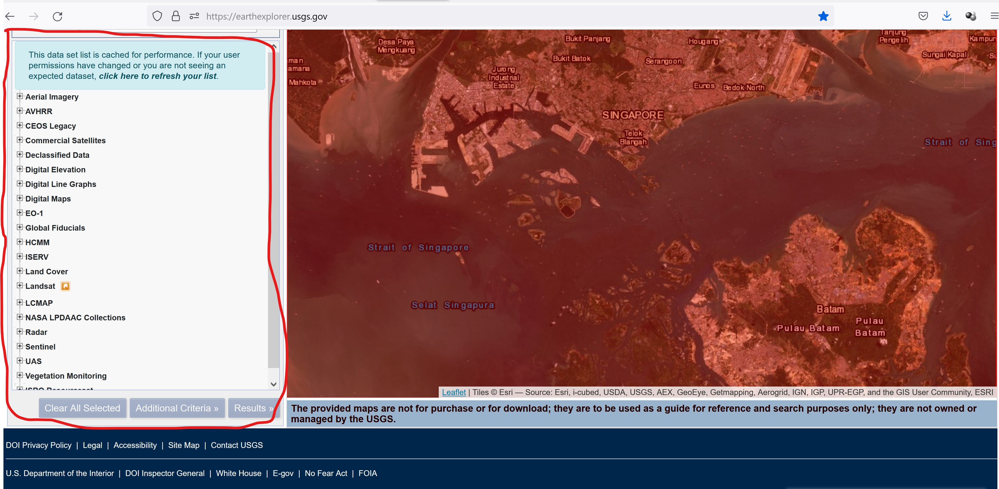
USGS Earth Explorer provides a comprehensive remote sensing datasets: aerial imagery, AVHRR, commercial imagery, digital elevation models, Landsat, LiDAR, MODIS, Radar, and more. We are interested on Landsat 8 data.
- From the list, click on the check-box in front of Landsat -> Landsat Collection 2 Level 1 -> Landsat 8-9 OLI/TIRS C2L1.
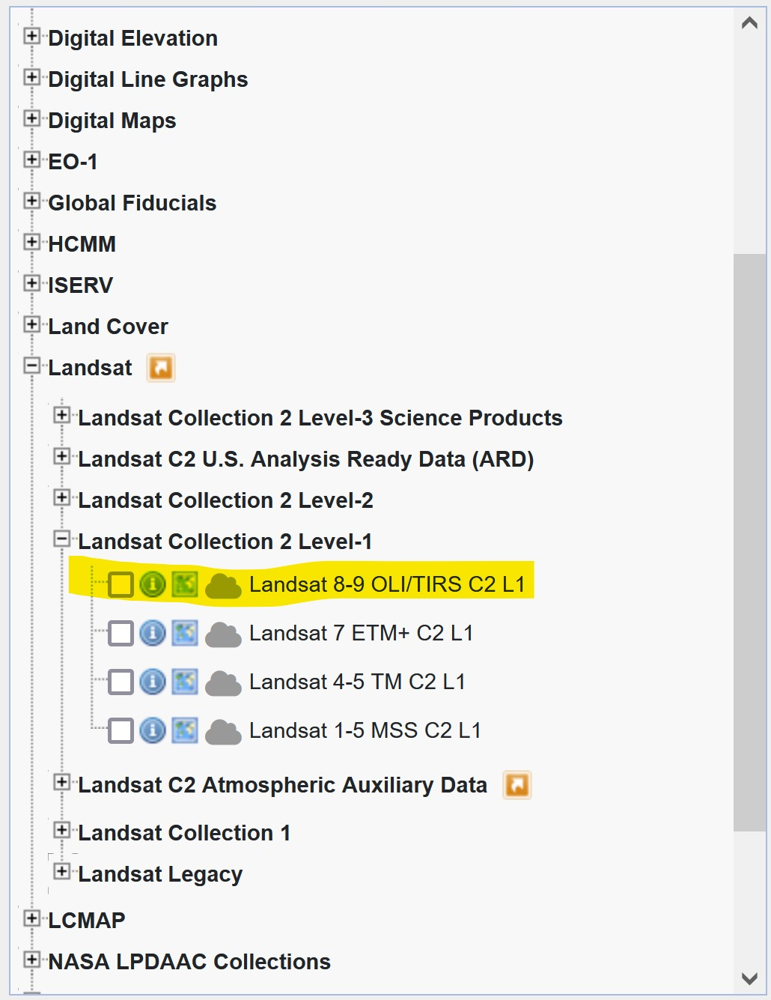
2.2.3 Step 3. Filter your data in the “Additional Criteria” tab
Next, we will define additional search criteria.
- From the left panel, click on Additional Criteria button.
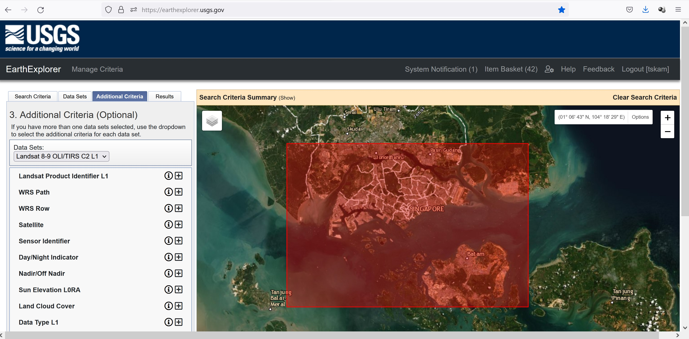
In general, we would like to select a cloud free Landsat 8 data. However, it is almost impossible to obtain a cloud free data sets. To be reality, a search criterion of 10-15% land cloud cover will be used.
From the left panel, click on the cross button at the back of Land Cloud Cover.
Type 5 to 15. This mean we would like to narrow the search to 5-15% land cloud cover.
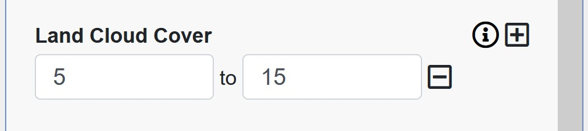
2.2.4 Step 4. Download free Landsat imagery in the “Results” tab usgs earth explorer results
Now, we are ready to download the select data sets. However, before we do so, it is a best practice for us to do a quick view of the data sets meeting our search criteria.
- From the left panel, click on Results button.
A list of Landsat 8 data meeting the search criteria appears on the left panel.
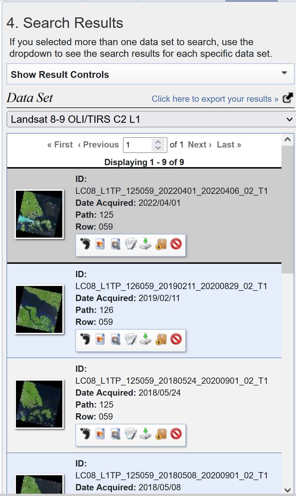
Before downloading any of the data sets, it is important for us to examine the scene in order to ensure that they are indeed fall within our area of interest. For example if you click on the thumb image dated 2019/02/11, you will notice that it did not Singapore.
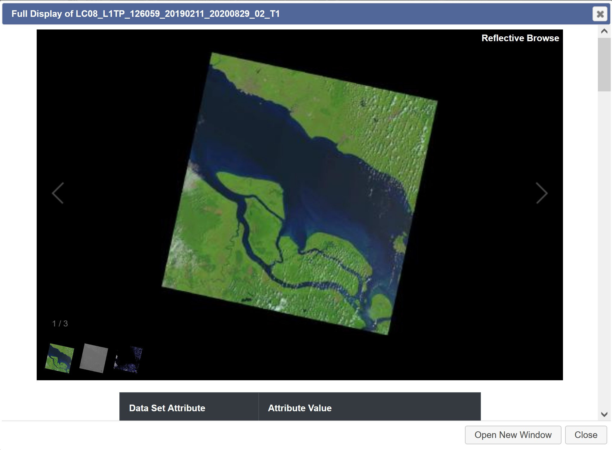
After careful examination, let us down the data set acquired on 2018/05/24.
- From the data set pane, click on Download button.
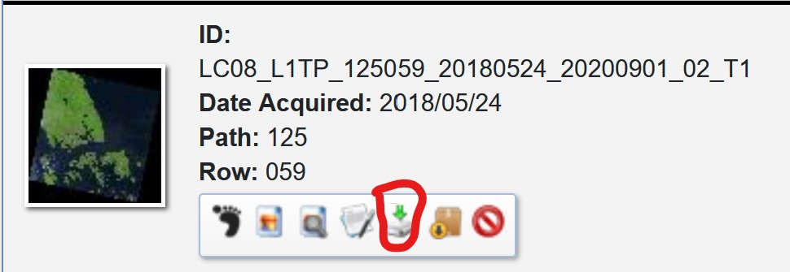
Download Options window appears.
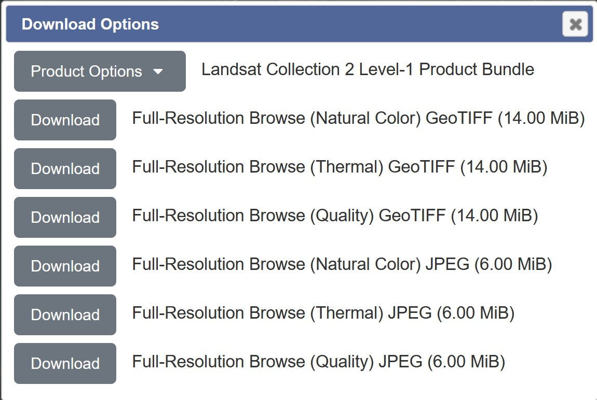
Since we are going to use the data for image processing and analysis, we will download the Level 1 GeoTIFF data product.
- Click on the drop-down list of Product Options.
Product Download Options window appears.
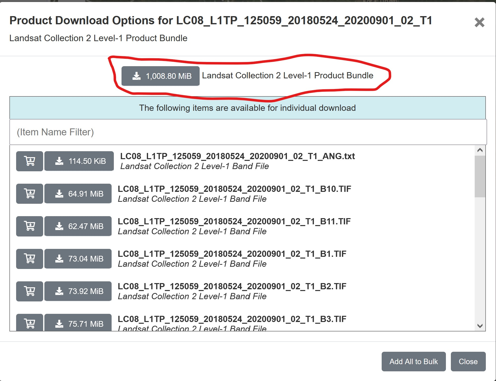
- Click on the button in front of Landsat Collection 2 Level-1 Product Bundle.
Be patient, the data size is very large and will take sometime to download.
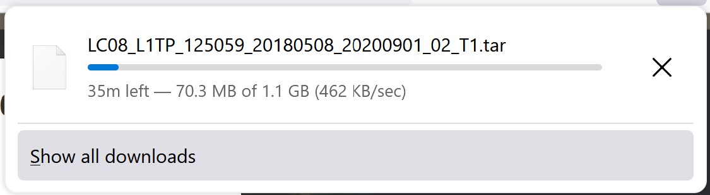
Gentle reminder: The downloaded data will be in zip file format. You need to unzip the file. It is also a good practice to keep the downloaded files in the project folder.
2.3 Downloading Sentinel 2 data
Sentinel-2 is an Earth observation mission from the Copernicus Programme that systematically acquires optical imagery at high spatial resolution (10 m to 60 m) over land and coastal waters.